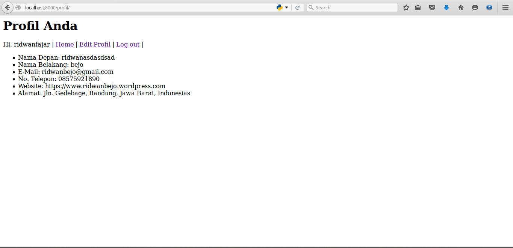
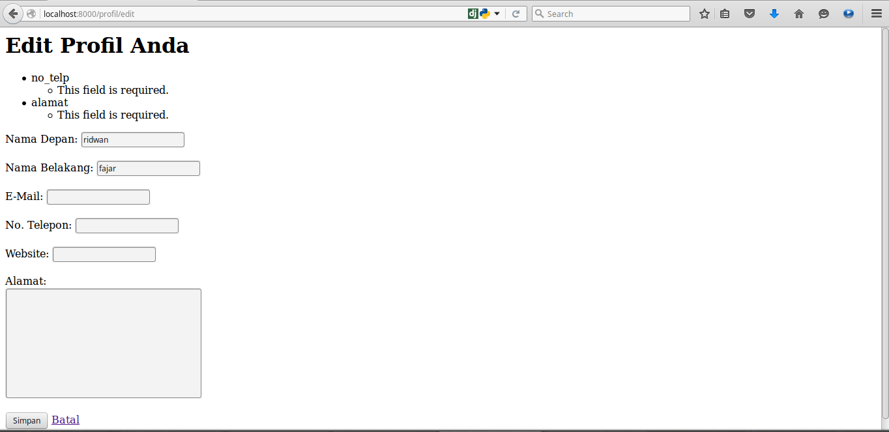
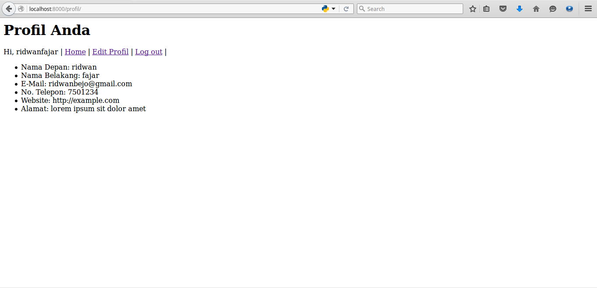
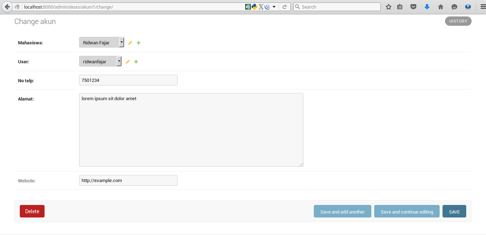

Di modul terakhir ini, Anda akan mempelajari bagaimana membuat form otomatis di Django yang sudah dilengkapi dengan validasi. Sehingga Anda tidak perlu membuat validasi sendiri. Kita akan dapat melihat profil mahasiswa dan melakukan edit profil. Disini kita akan menggunakan mekanisme update terhadap tabel users dan akun.
Tambahkan dua URL baru untuk "/profil" dan "/profil/edit". Sesuaikan kode urls.py Anda dengan kode berikut:
from django.conf.urls import url
from django.contrib import admin
from homepage import views as home_views
urlpatterns = [
url(r'^admin/', admin.site.urls),
url(r'^$', home_views.daftar_nilai),
url(r'^login/$', home_views.login_view),
url(r'^logout/$', home_views.logout_view),
url(r'^profil/$', home_views.profil),
url(r'^profil/edit$', home_views.profil_edit),
]
Sekarang kita akan menambahkan views profil di homepage/views.py yang berfungsi untuk melihat profil dari mahasiswa yang sedang login. Sederhanaya, kita ambil data yang ada di tabel Akun kemudian menampilkannya di template yang akan menampilkan data profil mahasiswa tersebut:
@login_required(login_url=settings.LOGIN_URL)
def profil(request):
user = request.user
akun = Akun.objects.get(user=user)
return render(request, 'profil.html', {'user':user, 'akun':akun})
Sekarang silahkan buat file profil.html simpan di dalam folder homepage/templates:
<h1>Profil Anda</h1>
Hi, {{ request.session.username }} | <a href="/">Home</a> | <a href="/profil/edit">Edit Profil</a> | <a href="/logout/">Log out</a> |
<ul>
<li>Nama Depan: {{ user.first_name }}</li>
<li>Nama Belakang: {{ user.last_name }}</li>
<li>E-Mail: {{ user.email }}</li>
<li>No. Telepon: {{ akun.no_telp }}</li>
<li>Website: {{ akun.website }}</li>
<li>Alamat: {{ akun.alamat }}</li>
</ul>
Pada kode diatas, kita dapat melihat bagaimana cara mengakses data session di Django, kemudian kita juga mencoba menampilkan data dari user yang sedang login dan mengakses data yang ada di dalam objek akun. Bila kita lihat di web browser maka akan tampil seperti berikut:

Setelah menampilkan profil, saatnya kita hadirkan fitur untuk mengubah profil. Silahkan buat views baru dengan nama profil_edit di homepage/views.py. Dimana kita akan mengubah dua data yang berada di tabel User dan Akun. Sekarang tambahkan kode berikut di dalam homepage/views.py:
@login_required(login_url=settings.LOGIN_URL)
def profil_edit(request):
user = request.user
akun = Akun.objects.get(user=user)
if request.method == "POST":
print request.POST
user_form = UserForm(request.POST)
akun_form = AkunForm(request.POST)
if user_form.is_valid() and akun_form.is_valid():
user.first_name = request.POST['first_name']
user.last_name = request.POST['last_name']
user.email = request.POST['email']
user.save()
akun = Akun.objects.get(user=user)
akun.no_telp = request.POST['no_telp']
akun.website = request.POST['website']
akun.alamat = request.POST['alamat']
akun.save()
return redirect('/profil')
else:
user_form = UserForm(instance=user)
akun_form = AkunForm(instance=akun)
return render(request, 'profil_edit.html', {'user_form':user_form, 'akun_form':akun_form})
Intinya request yang datang dari client akan diperiksa apakah bermetod GET atau POST. Jika GET maka tampilkan form untuk mengubah profil, jika POST maka lakukan validasi dan jika validasi berhasil maka ubah profil di database, dan kembalikan ke halaman "/profil".
Sedangkan berikut adalah form untuk mengubah profil. Silahkan buat file baru dengan bana profil_edit.html dan simpan di homepage/templates:
<h1>Edit Profil Anda</h1>
<form id="new-artist-form" action="/profil/edit" method="POST" role="form">
{% csrf_token %}
{% if user_form.errors %}
{{ user_form.errors }}
{% endif %}
{% if akun_form.errors %}
{{ akun_form.errors }}
{% endif %}
Nama Depan:
{{ user_form.first_name }}
<br/>
<br/>
Nama Belakang:
{{ user_form.last_name }}
<br/>
<br/>
E-Mail:
{{ user_form.email }}
<br/>
<br/>
No. Telepon:
{{ akun_form.no_telp }}
<br/>
<br/>
Website:
{{ akun_form.website }}
<br/>
<br/>
Alamat:
<br/>
{{ akun_form.alamat }}
<br/>
<br/>
<input href="javascript:void(0);" value="Simpan" type="submit"/>
<a href="/profil">Batal</a>
</form>
Berikut adalah tampilan halaman ubah profil:


